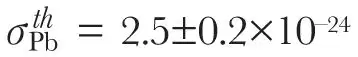
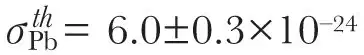
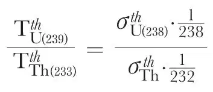
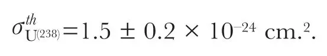
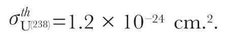

中文
中文L. Meitner
Editor’s Note
Physicists had not yet measured the “capture cross-section”—the tendency to become captured—of thermal neutrons in the nuclei of 238U, an important parameter for the possibility of a nuclear chain reaction. A small capture cross-section—fewer neutrons captured—would make the process more likely, as this leaves others to trigger fission events. Here Lise Meitner measures this cross-section in thorium and then uses it to estimate the corresponding value for uranium. Using a relationship derived by Niels Bohr linking the ratio of beta decay events in thorium and uranium, she reports a value very close to that reported independently by Enrico Fermi and Carl Anderson. 中文
EXPERIMENTS on the processes arising in thorium under neutron bombardment have shown that nuclear fission is induced only by fast neutrons of energies of about 2 Mev. or more. There exists also a radiative capture process producing an isotope of thorium (Th 233) of 26 min. half-life; this process has a resonance character with a large contribution from thermal neutrons1. So far, the capture cross-section of thermal neutrons in thorium has not been measured. The following experiments were carried out in order to determine this cross-section. 中文
As the neutron source available was not very strong (100 mgm. Ra+Be), all dimensions had to be kept as small as possible. On the other hand, in order to obtain high accuracy of measurement, one had to use an absorbing thorium layer of reasonable thickness. By the kindness of Prof. Coster, I obtained a sample of metallic thorium of more than 99 percent purity. Dysprosium of the highest purity, also kindly given me by Prof. Coster, was used as detector. The thorium was almost exactly prismatic in form (1.2 cm. × 1.2 cm. × 2.96 cm.). The dysprosium was a thin layer (15.7 mgm./cm.2 Dy) of rectangular form, 1.0 cm. × 2.7 cm., and its upper face was covered with 2 μ “Cellophane”. For the absorption measurement the thorium was placed directly on the dysprosium with or without a cadmium screen, so that the neutrons impinging normally had to go through 1.2 cm. thickness corresponding to 13.4 gm. thorium. 中文
The experimental arrangement was as follows. In a plate of paraffin wax of 3.8 cm. thickness, there was cut out a rectangular cavity of 1.3 cm. depth, the bottom and sides of which were covered with cadmium of 0.5 mm. thickness so that thermal neutrons could not enter except from above. This plate was put between two other plates of paraffin wax, forming in this way a block of 11.5 cm. height and about 25 cm. × 25 cm. area. The dysprosium was placed on the cadmium-shielded bottom of the cavity. The upper paraffin plate contained the neutron source 3.3 cm. below the surface in such a way that the source just touched the upper edges of the cadmium screened cavity. 中文
The activity of the dysprosium detector was measured with a Geiger-Müller counter with 0.1 mm. aluminium walls connected to an amplifier. The dysprosium, the half-life of which was carefully determined and found to be 156 ± 3 min., was in all experiments irradiated up to saturation, and the decay of the activity was followed for several hours in order to increase the accuracy of measurements. All measurements were referred to a uranium standard. The contribution from thermal neutrons was determined by carrying out the irradiation with and without 0.5 mm. cadmium directly over the exposed face of the detector. With cadmium screens on all faces of the detector, the observed activity is due to neutrons faster than thermal neutrons. Under the experimental conditions used here, it amounted to 9 percent of the activity obtained without cadmium on the exposed face. 中文
For the determination of the capture cross-section for thermal neutrons in thorium, one has to consider the different kinds of interaction of neutrons with the thorium nucleus. The fission cross-section of fast neutrons is so small as to be negligible. The same holds for the radiative capture cross-section of fast neutrons. Therefore for fast neutrons one has to take into account the scattering cross-section only. Because of the arrangement used—the absorber being put directly on a detector of nearly equal size—one would expect that practically all the scattered neutrons would be efficient in the irradiation, that is, the scattering cross-section would not enter into these measurements. Experiment confirmed this expectation. When the detector was screened on both faces by cadmium, the measurements of the activity with and without thorium (or with and without lead) gave the same values within the experimental error of 2–3 percent. Further, in order to test the influence of inelastic scattering, the cadmium was placed by turns either directly on the exposed face of the detector (with the thorium put upon that), or between the neutron source and the thorium absorber. No difference could be detected. Thus the inelastic scattering does not give rise to thermal neutrons in any observable quantity, a result to be expected. 中文
These results suggest that, under the conditions actually used, the scattering of thermal neutrons too will be negligible, and thus the decrease in activity (of about 28 percent) caused by the thorium absorber is due to radiative capture processes only. To obtain a direct proof the absorption in metallic lead was measured. The lead absorber had practically the same dimensions as the thorium absorber, but the thickness of the cast lead prism of density 10.6 was kept a little smaller (1.10 cm.) in order to have the same number of absorbing nuclei per cm.2. 中文
Of course, in determining the cross-sections, the angular distribution of the thermal neutrons was taken into account and obliquity corrections (angles up to nearly 70° were involved) were made according to the data given by Frisch2. 中文
The total cross-section for thermal neutrons in lead was found to be

cm.2. This value is in very good agreement with the value of 2.3×10–24 cm.2 obtained by Fleischmann3 from γ-ray measurements. Thus one can be sure that for thorium too the radiative capture cross-section alone enters into the measurements. The value obtained is
cm.2. This cross-section can be used to evaluate the capture cross-section of 238U. In this isotope, as Bohr4 has emphasized, thermal neutrons do not produce fission processes. Thus when equal small quantities of uranium and thorium are subjected to neutron bombardment under identical conditions, 239U and 233Th respectively being produced, it is clear that if on account of their nearly equal half-life the efficiency of the β-rays is assumed to be approximately the same, the β-ray activities due to thermal neutrons (corrected for equal numbers of nuclei) must be proportional to the respective cross-sections:
From earlier measurements carried out in Dahlem, I find for this ratio the value 1/4.15. Using the above value for the cross-section of thorium, the cross-section for uranium 238 is

Anderson and Fermi5, measuring directly the β-ray intensity of 239U due to a known number of thermal neutrons, found

Considering the possibility of fairly large errors in this type of measurement, the agreement is very good. 中文
I wish to express my gratitude to the Academy of Sciences for a grant and in particular to Prof. Siegbahn for the facilities kindly put at my disposal. 中文
(145, 422-423; 1940)
Lise Meitner: Forskningsinstitutet för Fysik, Stockholm, Feb.1.
References:
1. Meitner, L., Hahn, O., and Strassmann, F., Z. Phys., 109, 538 (1938).
2. Frisch, O. R., Kgl. Dansk Vid. Selskab. Math. Phys. Medd., 14, No. 5 (1936).
3. Fleischmann, R., and Bothe, W., Ergeb. exact. Naturwiss., 16, 37 (1937).
4. Bohr, N., Phys. Rev., 55, 418 (1939).
5. Anderson, H. L., and Fermi, E., Phys. Rev., 55, 1106 (1939).